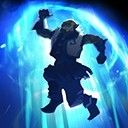

Dota 2 Builds
Zeus
Повелитель небес и отец богов видит во всех героях своих буйных, мятежных детей. Неисчислимы свидания со смертными женщинами, где заставала его супруга. Поставила богиня бессмертного перед выбором: «Если нравятся смертные, иди и сам стань среди них. Докажи свою верность, и приму тебя своим мужем бессмертным. Если же нет — иди и умри средь созданий своих». Согласился с ней бог: неоспоримы были её слова (да и магия тоже). С тех пор он вёл себя примерно, проявляя к бессмертию чуть больше любви, чем к смертным. Но чтобы умолить вечную свою супругу, он должен стремиться к победам на поле боя.
Способности/Abulities
Arc Lightning
Выпускает молнию, которая перескакивает с одного врага на другого..

Способность: направленная на юнита
Действует на: врагов
Тип урона: магический
Дальность применения: 850
радиус отскакивания: 5/7/9/15
количество отскоков: 500
интервал отскоков: 0,25
Урон: 110/160/210/260 (Талант: 160/210/260/310)
Любимый приём бога грома против жалких смертных.Lightning Bolt
Ударом молнии наносит врагу урон и ненадолго его оглушает. В радиусе 750 вокруг цели на время даётся беспрепятственный обзор и раскрывается невидимость. Способность можно применить на землю — тогда она подействует на ближайшего вражеского героя в радиусе 325.Способность: направленная на точку/направленная на юнита/направленная на область (с талантом)
Действует на: врагов
Тип урона: магический
Дальность применения: 700/750/800/850
Радиус поиска цели: 325
Радиус обзора и True Sight: 750
Урон: 125/200/275/350
Длительность оглушения: 0,3 (Талант: 0,7)
Длительность обзора и True Sight: 5
Длительность задержки ауры True Sight: 0,5
Ошеломляющее наказание для мятежных язычников.Heavenly Jump
 Герой совершает божественный прыжок, во время которого он ударит током ближайшего видимого врага (в первую очередь героев), нанеся ему урон и замедлив его передвижение, атаку и применение заклинаний. Если герой передвигался, он прыгнет вперёд. Способность на 3 секунды даёт беспрепятственный обзор в радиусе 900 вокруг владельца.Способность: ненаправленная
Действует на: врагов/себя
Тип урона: магический
Радиус поиска: 700/800/900/1000
Дальность прыжка 500
Количество целей: 1 (Талант: 2)
Урон: 20/50/75/100
Замедление скорости передвижения: 80%
Замедление скорости атаки: 100
Замедление применения заклинаний: 50%
Длительность замедления 1,6
Длительность прыжка: 0,5
Бонусная скорость передвижения после Heavenly Jump: 0 (Талант: 30)
Nimbus
Создаёт в любом месте карты грозовое облако, которое автоматически ударяет врагов неподалёку молниями от способности Lightning Bolt.Способность: направленная на область
Действует на: врагов
Тип урона: магический
Дальность применения: глобальная
Радиус облака: 450
Атак героев с ближней атакой для разрушения: 4
Атак героев с дальней атакой для разрушения: 8
Атак не-героев для разрушения: 16
Интервал выстрелов Lightning Bolt: 2,5
Длительность: 30
Где гневается бог грома, вскоре собираются тучи.Static Field
Все враги, которых герой атакует и на которых действуют его способности, получают дополнительный урон в размере 9% от своего текущего здоровья.Способность: Пассивная
Действует на: врагов
Тип урона: магический
Урон от текущего здоровья: 8%
Для активации способности требуется Aghanim's Shard
Когда владыка грома ступает по земле, даже воздух вокруг него искрится от напряжения.Thundergod's Wrath
Поражает всех вражеских героев молнией вне зависимости от их местоположения. Способность также раскрывает невидимость вражеских существ вокруг каждого ударенного противника. Если герой врага невидим, то он не получит урона, но невидимость всё равно раскроется.Способность: ненаправленная
Действует на: вражеских героев
Порог здоровья: 400
Тип урона: магический
Радиус действия: глобальная
Радиус обзора: 500
Радиус True Sight: 900
Урон: 300/425/550 (Талант: 400/525/650)
Длительность обзора и True Sight: 3
Длительность задержки ауры True Sight 0,5
Повелитель небес сокрушает всех, кто противостоит ему, независимо от того, близко или далеко они находятся.Сборка/Builds
Начальный закуп:


Основные предметы:


YOUTUBE:GREYSHARK

YOUTUBE:GREYSHARK
ИСПОЛЬЗОВАТЬ ЭТОТ ИМБА БИЛД